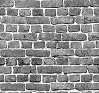

Project Overview:
I created a canvas that draws a rectangle and completely fills its interior
with a repeating brick tile image from the Img folder. This demonstrates pattern filling by utilizing
the context.createPattern() method, passing in the hidden DOM image and
the "repeat" string argument. I learned that once a pattern is created, it is treated
exactly like a solid hex color by the canvas engine, meaning I could simply assign it
to context.fillStyle before invoking the fill method on my path.
